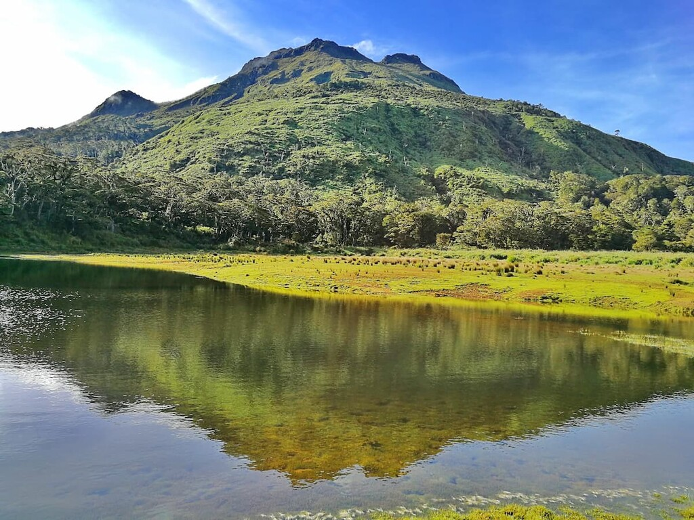

The Sunken Cemetery, also known as the Old Volcano is a popular sight seeing spot with history. During the 1800s, Mount Vulcan erupted causing the massive devastation on the island. This particular area was hit especially hard, the eruption caused the cemetery and the old capital city to sink below sea level.
Some say a feeling of loneliness will hit you once you see this structure standing all alone in the middle of the sea. A place of reverence and reflection, the site is accessible by boat and visitors can stand on its small base while it remains above water. Many take the small boat ride in order to take photos and soak in the view of Mt. Vulcan, the volcano that sacrificed the people of Camiguin to the sea when it came into being.
With an elevation of 9,692 feet above sea level, it is the highest mountain in the Philippine Archipelago and the 24th highest peak of an island on Earth. What is this? Mount Apo National Park established in 1936, it is the home of the rare Philippine eagle and features numerous peaks and valleys.
A note on the etymologies: Mt. Apo is said to be named after a nobleman named Apong, who was killed while mediating the battle between two suitors of his daughter Saribu. Another proposed origin of the name is from the word Apo itself, which in Filipino tongues means “master” or “grandfather”.